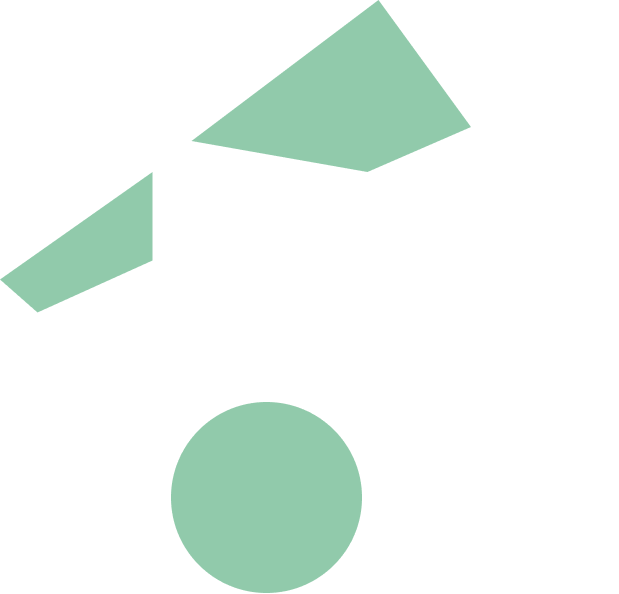
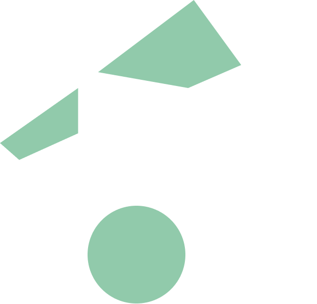

Data-probe 1
23 October 2023 (WS1)
Mendrisio (CH)
Participant 1
She has been a practicing nurse for six years and recently completed a master’s degree in nursing sciences. Her professional experience includes working in gynecology clinics, supporting both expectant mothers and young women, which has given her a strong foundation in topics related to women’s health. Currently, she works in a care home for the elderly, where she frequently manages cases of urinary tract infections (UTIs), encountering them almost daily. Although she has not personally experienced UTIs, she brings valuable professional insights and expertise from her clinical practice to the subject.
Written description:
Not provided
Picture of the probe:
 



List of components:
Oral description:
“So, well, as you know, I have never had any personal experience, but I treat, I have treated many patients, so I put the rough paper underneath to demonstrate the fact that the world is not smooth, in the sense that some veins always happen. In short, so it's something that some people have certain problems, and others have these problems... well, that's how it is now. The colours because, well, I don't have, I mean, not in the sense that I never see life only with dull colours, but in any case with vivid colours, and I wanted to say that in any case, in the end, in all this problem here, it's not that there's no remedy, even if they are chronic things that, however, even with the passing of time, even with ageing, however, less badly, pass or transform. And then there, I put the ball with the wire not to give you a sense of cage constraint, but simply that in any case every situation is complex and must be taken individually. has their own definition anyway, and unfortunately I admit it, it's that in the health world this thing here, if you always try to standardise, but in the end you don't... every situation is its own and then in the end the lighter one of ball for anyway. That's how you also mentioned some of you that in the end let's say antibiotics or at least strong therapies, so they are not always a solution many times it's enough...I have friends who have brought cystitis with acupuncture and well, there are those who actually believe in it. Then there are so many things, even lighter things [alternative solutions to antibiotics].”